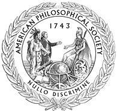

News Archives : 2005 : Richard Losick Elected to American Philosophical Society
by Karen Hopkin
June 13, 2005

For more than 30 years, Losick has focused his attention, as he says, on determining "how genes are switched on and off when cells differentiate from being one kind of cell to another." His experimental subject is the spore-forming bacterium, Bacillus subtilis. "One of the nice things about studying development in a bacterium is that it’s a simple enough system that we can hope to understand it in its totality," he notes. "That is, we can hope to identify all of the genes that are involved in transforming the cell into a spore--and then work out the entire regulatory circuit that brings about that transformation." Most recently, Losick and his former postdoc Jonathan Dworkin, now at Columbia University in New York City, identified two genes that are necessary for commitment to spore formation in B. subtilis, work that appeared in the May 6 issue of Cell (Developmental commitment in a bacterium. Cell. 121(3):401-9).
Differentiation and development are processes that occur in many organisms, Losick remarks, "so we like to think that what we learn about gene control in developing bacteria has broader implications for biology. But to be honest about it--for me, just taking one organism and understanding in detail how differentiation works is what really matters," he says. "Of course, if our findings turn out to have implications for other organisms, that’s icing on the cake."
As a member of APS, Losick joins a club whose roster has boasted such scientific notables as Charles Darwin, Thomas Edison, Louis Pasteur, Albert Einstein, and Marie Curie, as well as founding fathers George Washington, John Adams, Alexander Hamilton, Thomas Paine, and Thomas Jefferson. APS currently has more than 900 members in the United States and abroad, individuals whose accomplishments span a broad range of disciplines from the physical and biological sciences to mathematics, humanities, and the arts.
"When Benjamin Franklin founded the APS," says Nora Monroe, director of membership and prizes, he hoped that bringing together thinkers from diverse fields to discuss their work "would feed the creativity of each person." To that end, APS holds broad-ranging meetings for its members twice a year. "I look forward to participating," says Losick--and to the signing of the official society roll book, which dates back to Franklin’s time. "Franklin’s name is at the top of the list and mine will be at the bottom," he marvels. "That’s quite extraordinary!"